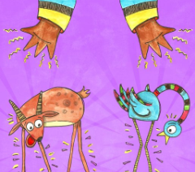
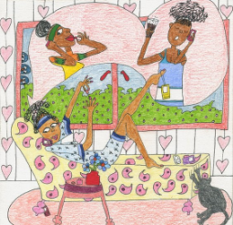

Kinyarwanda Stories...
Your Full Library Collection
Browse all books in the library, save your favorites, and track your reading journey completely online.
All Books
View All
Fiction
Injangwe za Sano
mmalecki
4.3
Favorite
Sci-Fi
Mpyisi na Bakame
Sonia
4.7
Favorite

Self-HelpMaguru Atanga Amaguru
Nelly son
4.8
Favorite

MysteryNyiramaterefone
Ton curry
4.1
Favorite
 Drama
Drama
Inzira y'Ubuzima
ecki
4.5
Favorite
Family
Umubyeyi w'Inzozi
mmal
4.6
Favorite
Romance
Urukundo Ruhoraho
Didi
4.4
Favorite
History
Inkuru z'Amateka
Abraham
4.9
Favorite